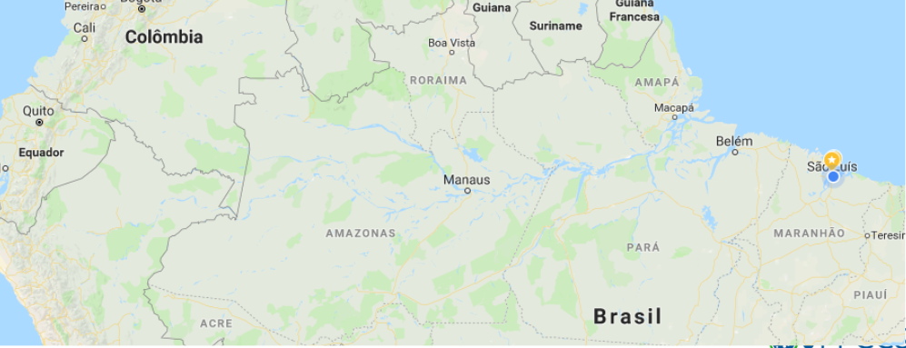
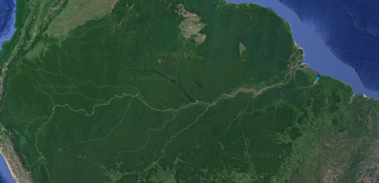
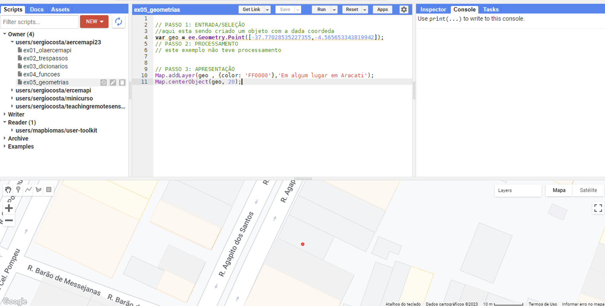
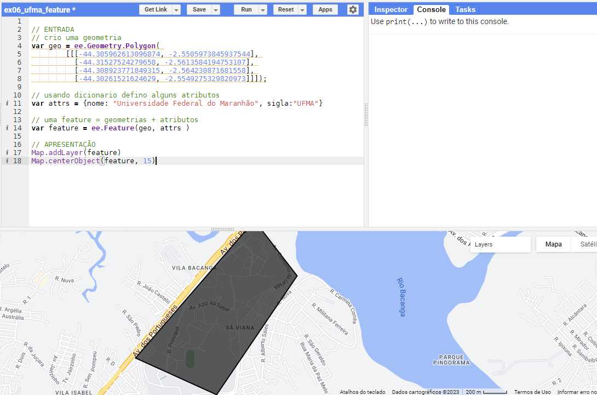
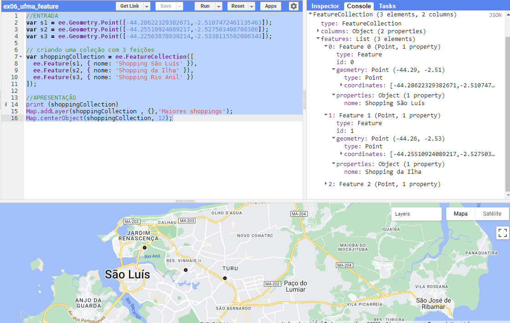
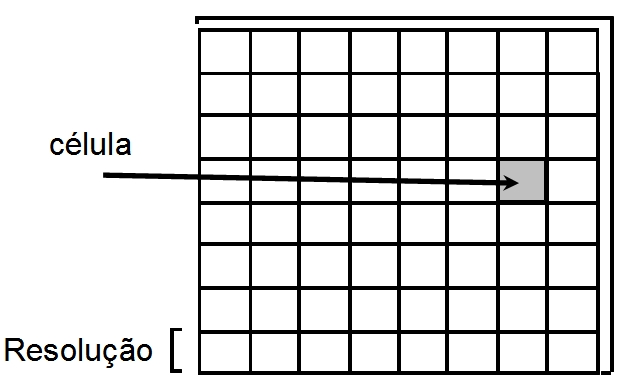
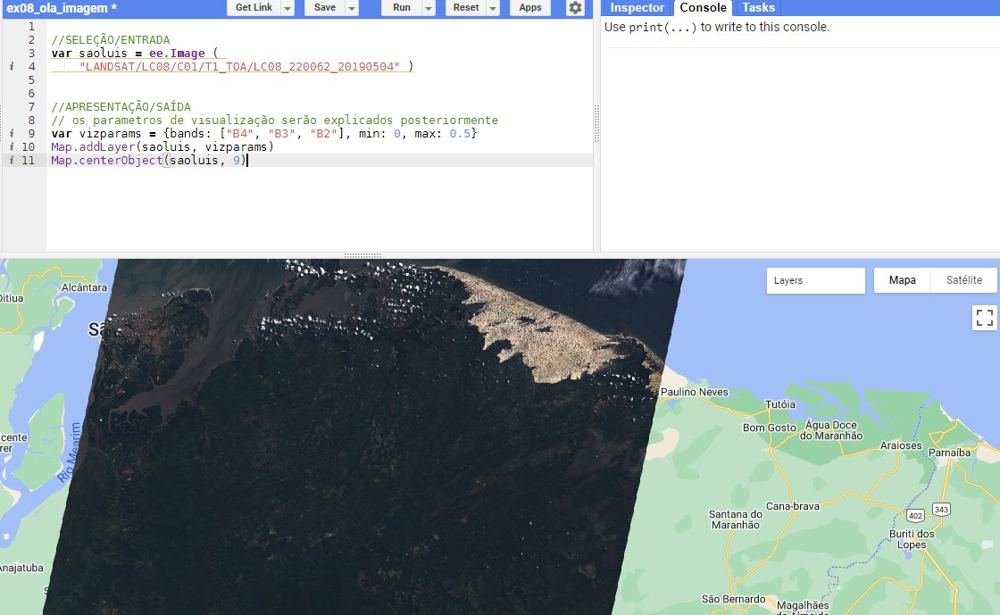
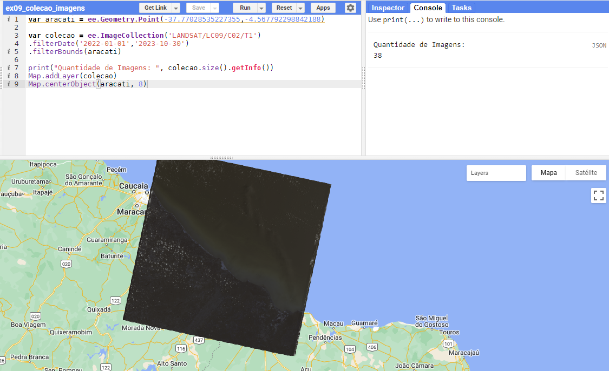

Tipos de Dados Geográficos¶
Como representar a informação geográfica em um sistema computacional? O mundo real é extremamente complexo, e só conseguimos capturar partes dele por meio de modelos e abstrações. Este capítulo apresenta as duas grandes visões conceituais do espaço geográfico — objetos e campos —, suas representações computacionais — vetores e matrizes — e como elas aparecem no Google Earth Engine.
🧠 Abstração e níveis de modelagem¶
Até a nossa linguagem é um modelo: embora existam infinitas árvores diferentes, reconhecemos uma árvore quando a vemos. "Abstração é o processo mental que consiste em escolher ou isolar um aspecto determinado de um estado de coisas relativamente complexo, a fim de simplificar a sua avaliação, classificação ou para permitir a comunicação do mesmo" (HOUAISS, 2006). Para resolver um problema, é necessário escolher uma abstração da realidade. A observação e a medição desempenham papel central nessa escolha.
Nos sistemas de informação geográfica, a modelagem costuma ser entendida em quatro níveis de abstração (CÂMARA, 2005):
flowchart TB
A["<b>Mundo real</b><br/>fenômenos geográficos: rios, cidades, montanhas"]
B["<b>Conceitual</b><br/>conceitos formais para modelar as entidades:<br/>objetos e campos"]
C["<b>Apresentação</b><br/>aspecto visual: cores, símbolos, rótulos"]
D["<b>Implementação</b><br/>estruturas de dados e armazenamento:<br/>vetores e matrizes"]
A --> B --> C
B --> D- Mundo real: os fenômenos geográficos — aqueles que, como vimos no Capítulo 1, possuem tempo e espaço bem definidos.
- Conceitual: os conceitos formais com os quais as entidades geográficas podem ser modeladas.
- Apresentação: o aspecto visual ou gráfico — cor, tipo e espessura de linha, padrão de hachura, simbologia e rotulação.
- Implementação: as estruturas de dados e os modos de armazenamento.
Nível conceitual: objetos e campos¶
Na literatura são aceitas duas visões de dados geográficos (LONGLEY et al., 2013):
- Objetos discretos (objects, geo-objetos): representam o mundo como entidades com limites bem definidos sobre um espaço vazio. Um exemplo comum são os mapas geopolíticos, cujos limites são definidos e aceitos por acordos (inter)nacionais — ou as montanhas com nome, como o Monte Everest.
- Campos contínuos (fields, geo-campos): representam o mundo real como um número finito de variáveis, cada qual definida em cada posição do espaço. Um exemplo comum são as imagens de satélite, já que o sensor registra um valor para cada posição imageada — ou a topografia, a altitude que varia continuamente sobre a paisagem.
| Objetos discretos | Campos contínuos |
|---|---|
 |
 |
Diferentes sistemas usam nomes diferentes para esses conceitos:
| Sistema / padrão | Objetos | Campos |
|---|---|---|
| SPRING (CÂMARA et al., 1996) | coleção de geo-objetos (mapa cadastral) | geo-campo numérico e geo-campo temático (imagens são um caso particular de geo-campo numérico) |
| ArcGIS (ESRI) | features (feições) | surfaces (superfícies) |
| OpenGIS (OGC) | feature collection | coverage |
| Google Earth Engine | ee.Feature, ee.FeatureCollection |
ee.Image, ee.ImageCollection |
O Google Earth Engine trabalha com ambas as representações, mas seu maior potencial está no processamento de campos contínuos — as imagens.
Nível de implementação: vetores e matrizes¶
Vetores e matrizes são as estruturas de dados usadas, respectivamente, para representar objetos discretos e campos contínuos (SMITH et al., 2007):
- A estrutura matricial (raster) divide o mundo em uma grade de células e especifica atributos para cada célula (LONGLEY et al., 2013). Formatos de arquivo comuns: GeoTIFF, GXF, GeoPackage (raster tiles).
- A estrutura vetorial representa o mundo como coleções de feições geométricas — pontos, linhas e polígonos — com um ou mais atributos associados. Formatos comuns: Shapefile, KML, GeoJSON, GeoPackage, GPX, DWG e DGN.
Ambas podem ser armazenadas em bancos de dados espaciais, tema da Parte 2.
📍 Dados vetoriais¶
Nos dados vetoriais, a localização e a forma de cada objeto são representadas por um ou mais pares de coordenadas (a geometria), podendo incluir atributos não espaciais que o descrevem e identificam (DAVIS; FONSECA, 2001). Os pares de coordenadas formam três geometrias primitivas: ponto, linha e polígono (área).

O formato WKT¶
Essas primitivas podem ser escritas em diferentes formatos. Aqui usaremos o WKT (Well-Known Text), definido pelo OGC, por ser legível e ajudar a compreender a estrutura interna das geometrias. O WKT é o nome do tipo seguido dos pares de coordenadas (longitude latitude):
POINT (-44.29777178028425 -2.5313470294034044)
LINESTRING (-44.300075363904284 -2.543551794770009,
-44.315009903699206 -2.5610438856080293,
-44.3201597450078 -2.5655883603806258,
-44.33234770277147 -2.5655883603806258,
-44.338527512341784 -2.564387934650711)
POLYGON ((-44.29622682789167 -2.5235440348039972,
-44.30652651050886 -2.526973928317386,
-44.30300745228132 -2.5364918353169004,
-44.29777178028425 -2.54360878308611,
-44.28627046802839 -2.5348626489898383,
-44.29622682789167 -2.5235440348039972))
Observe que o polígono termina no mesmo ponto em que começa: o anel é fechado. Voltaremos ao WKT no Capítulo 14, no contexto dos bancos de dados.
Geometrias no GEE: ee.Geometry¶
O GEE representa as primitivas com os tipos ee.Geometry.Point, ee.Geometry.LineString e ee.Geometry.Polygon. As coordenadas são escritas entre colchetes, separadas por vírgula:
| WKT | Google Earth Engine |
|---|---|
POINT (-44.2977 -2.5313) |
ee.Geometry.Point([-44.2977, -2.5313]) |
LINESTRING (-44.30 -2.54, -44.31 -2.56) |
ee.Geometry.LineString([[-44.30, -2.54], [-44.31, -2.56]]) |
POLYGON ((x1 y1, x2 y2, x3 y3, x1 y1)) |
ee.Geometry.Polygon([[[x1, y1], [x2, y2], [x3, y3]]]) |
Para visualizar uma geometria, adicionamos-a ao mapa e aproximamos o zoom:
// PASSO 1: ENTRADA/SELEÇÃO
// cria um objeto ponto com as coordenadas dadas (longitude, latitude)
var geo = ee.Geometry.Point([-37.77028535227355, -4.565653343819942]);
// PASSO 2: PROCESSAMENTO
// este exemplo não tem processamento
// PASSO 3: APRESENTAÇÃO
Map.addLayer(geo, {color: 'FF0000'}, 'Em algum lugar em Aracati');
Map.centerObject(geo, 20);

Desenhando geometrias no mapa
Em vez de digitar coordenadas, você pode desenhar pontos, linhas e polígonos com as ferramentas no canto superior esquerdo do mapa — de modo parecido ao Google Maps e ao Google Earth. Ao concluir o desenho, a geometria aparece como um import no topo do script (com o nome geometry, que pode ser renomeado). Clicando no ícone ao lado dos imports, é possível copiar o código gerado, útil para reutilizar a geometria em outros scripts.
Feições: ee.Feature¶
As entidades geográficas codificadas no modelo vetorial são chamadas de feições (features): objetos do tipo ponto, linha ou polígono (LONGLEY, 2005). Além da geometria, elas têm atributos. Uma feição poligonal que representa um município, por exemplo, pode ter como atributos o nome, a população e o índice de desenvolvimento humano.
No GEE, uma ee.Feature é uma geometria + um dicionário de atributos. Cada chave do dicionário nomeia um atributo, e o valor pode ser de qualquer tipo. O código a seguir cria um polígono com os limites aproximados da Universidade Federal do Maranhão e dois atributos, nome e sigla:
// ENTRADA
// cria uma geometria
var geo = ee.Geometry.Polygon(
[[[-44.305962613096874, -2.5505973845937544],
[-44.31527524279658, -2.5613584194753107],
[-44.308923771849315, -2.564230871681558],
[-44.30261521624629, -2.5549275329820973]]]);
// um dicionário define os atributos
var attrs = {nome: 'Universidade Federal do Maranhão', sigla: 'UFMA'};
// uma feature = geometria + atributos
var feature = ee.Feature(geo, attrs);
// APRESENTAÇÃO
print(feature);
Map.addLayer(feature, {}, 'UFMA');
Map.centerObject(feature, 15);

Coleções de feições: ee.FeatureCollection¶
Usuários de SIG estão habituados a trabalhar com coleções de feições: o mapa do Maranhão, por exemplo, é uma coleção em que cada município é uma feição. No GEE, esse conceito é o tipo ee.FeatureCollection, basicamente um conjunto de ee.Feature. Uma coleção pode ser criada a partir de uma lista de feições, carregada do catálogo da plataforma ou importada de outras fontes.
// ENTRADA
var s1 = ee.Geometry.Point([-44.28622329382671, -2.5107472461135463]);
var s2 = ee.Geometry.Point([-44.25510924089217, -2.527503498708386]);
var s3 = ee.Geometry.Point([-44.22563878039214, -2.5338115592006343]);
// criando uma coleção com 3 feições
var shoppings = ee.FeatureCollection([
ee.Feature(s1, {nome: 'Shopping São Luís'}),
ee.Feature(s2, {nome: 'Shopping da Ilha'}),
ee.Feature(s3, {nome: 'Shopping Rio Anil'})
]);
// APRESENTAÇÃO
print(shoppings);
Map.addLayer(shoppings, {}, 'Maiores shoppings');
Map.centerObject(shoppings, 12);

No Console, expanda o objeto impresso: a coleção tem uma lista features, e cada feição tem geometry e properties. Neste exemplo a coleção foi criada explicitamente, mas o mais comum é que ela venha do catálogo ou de um arquivo enviado pelo usuário — é o que veremos no Capítulo 5.
🟩 Dados matriciais¶
Em uma representação matricial, o espaço é dividido em uma malha retangular de células, geralmente quadradas. O espaço é concebido como uma matriz \(P(m, n)\), com \(m\) colunas e \(n\) linhas, em que cada célula tem um número de linha, um número de coluna e um valor correspondente ao atributo estudado (CÂMARA, 2005). O exemplo mais comum são as imagens produzidas por sensores a bordo de satélites ou aeronaves. A resolução espacial depende da relação entre o tamanho da célula e a área que ela representa no terreno.

As quatro resoluções — espacial, espectral, radiométrica e temporal — foram apresentadas no Capítulo 2.
Imagens: ee.Image¶
O tipo ee.Image representa uma única imagem, que pode ser composta por várias bandas, cada uma com informações de uma faixa do espectro eletromagnético (vermelho, verde, infravermelho próximo...). Cada pixel tem um valor para cada banda, e a imagem está associada a um sistema de projeção. Assim como uma coleção de feições, uma imagem pode ser carregada a partir de seu identificador:
// SELEÇÃO/ENTRADA
var saoluis = ee.Image('LANDSAT/LC08/C02/T1_TOA/LC08_220062_20190504');
// APRESENTAÇÃO/SAÍDA
// os parâmetros de visualização serão explicados no Capítulo 6
var vizParams = {bands: ['B4', 'B3', 'B2'], min: 0, max: 0.5};
Map.addLayer(saoluis, vizParams, 'Landsat 8');
Map.centerObject(saoluis, 9);

O identificador conta a história da imagem: LANDSAT/LC08/C02/T1_TOA é a coleção (Landsat 8, Collection 2, Tier 1, reflectância no topo da atmosfera) e LC08_220062_20190504 é a cena — capturada em 4 de maio de 2019, na órbita/ponto (path/row) 220/062 do sistema de referência mundial do Landsat. Imprima a imagem com print(saoluis) e explore no Console suas bandas e propriedades (metadados). Com base nas respostas espectrais registradas nessas bandas, é possível discernir alvos na superfície, estimar temperaturas e muito mais.
Coleções de imagens: ee.ImageCollection¶
Uma ee.ImageCollection é um conjunto de imagens, que podem ser organizadas por data de aquisição, localização ou outros critérios. Ela permite representar dados em diferentes momentos, o que é crucial para análises temporais — e é com coleções, muito mais do que com imagens isoladas, que trabalhamos no GEE.
var aracati = ee.Geometry.Point(-37.77028535227355, -4.567792298842188);
var colecao = ee.ImageCollection('LANDSAT/LC09/C02/T1')
.filterDate('2022-01-01', '2023-10-30')
.filterBounds(aracati);
print('Quantidade de imagens:', colecao.size());
Map.addLayer(colecao, {bands: ['B4', 'B3', 'B2'], min: 5000, max: 15000}, 'Landsat 9');
Map.centerObject(aracati, 8);

Sem filtros, a coleção LANDSAT/LC09/C02/T1 contém centenas de milhares de cenas, cobrindo o mundo inteiro desde o lançamento do Landsat 9, em 2021. Os métodos .filterDate e .filterBounds já são um primeiro exemplo do filter do padrão filter–map–reduce; veremos a seleção de imagens em detalhe no Capítulo 6.
Ao adicionar uma coleção ao mapa
Map.addLayer aplicado a uma coleção exibe um mosaico: as imagens são sobrepostas e, em cada pixel, aparece o valor da última imagem da coleção que cobre aquele pixel. Para estatísticas sobre toda a coleção (média, mediana), usaremos redutores, no Capítulo 8.
📝 Síntese¶
| Visão conceitual | Estrutura | Tipos no GEE | Formatos de arquivo |
|---|---|---|---|
| Objetos discretos | Vetorial (ponto, linha, polígono) | ee.Geometry, ee.Feature, ee.FeatureCollection |
Shapefile, KML, GeoJSON, GeoPackage |
| Campos contínuos | Matricial (grade de células) | ee.Image, ee.ImageCollection |
GeoTIFF, GeoPackage |
✏️ Exercícios¶
- Classifique como objeto ou campo, justificando: (a) limites dos bairros de São Luís; (b) temperatura da superfície do mar; (c) rede de rodovias federais; (d) altitude do terreno; (e) localização das escolas públicas.
- Escreva em WKT e em código do GEE uma linha com três vértices que represente um trecho de uma avenida da sua cidade.
- Crie uma
ee.FeatureCollectioncom três pontos de interesse da sua cidade, cada um com os atributosnomeetipo. Imprima a coleção e adicione-a ao mapa. - Use a ferramenta de desenho para criar o polígono do seu campus. Transforme-o em uma
ee.Featurecom os atributosnomeearea_aprox_ha. - Carregue a imagem
LANDSAT/LC08/C02/T1_TOA/LC08_220062_20190504, imprima-a e responda: quantas bandas ela tem? Qual o valor da propriedadeCLOUD_COVER?